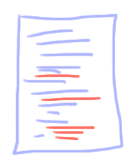
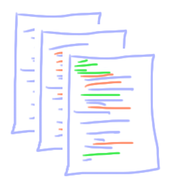

Introdução
Então você está trabalhando em um dos exercícios do CS50 e aí você começa com os arquivos que te deram...

Você altera um pouco...
Altera um pouco mais...

Mas espere! Em algum lugar dessa ultima versão, você cometeu um erro! Ah não! Agora tem tantas mudanças... Qual que está causando o problema?
Já pensou se tivesse algum programa que te mostrasse como os arquivos foram modificados? Um programa que lembre de TODAS AS VERSÕES do seu arquivo, exemplo:
E além disso, pudesse também destacar as diferenças:

É isso que um sistema de controle de versão faz. Git é um VCS - version control system, ou sistema de controle de versão.